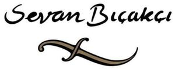

Trade Mark Journal No.2025/042 17 October 2025
WO0000001866165 (3,9,14,18,25,35)
Office of origin: Turkey
Date of International Registration:31 January 2025
Date of designation in the UK:
31 January 2025

The mark contains the colours brown, black and white.
International priority date claimed: 14 January 2025
(Turkey)
- Class 3
- Bleaching and cleaning preparations, detergents other than for use in manufacturing operations and for medical purposes, laundry bleach, fabric softeners for laundry use, stain removers, dishwasher detergents; perfumery; non-medicated cosmetics; fragrances; deodorants for personal use and animals; soaps; dental care preparations: dentifrices, denture polishes, tooth whitening preparations, mouth washes, not for medical purposes; abrasive preparations; emery cloth; sandpaper; pumice stone; abrasive pastes; polishing preparations for leather, vinyl, metal and wood, polishes and creams for leather, vinyl, metal and wood, wax for polishing.
- Class 9
- Counters and quantity indicators for measuring the quantity of consumption, automatic time switches; eyeglasses, sunglasses, optical lenses and cases, containers, parts and components thereof.
- Class 14
- Jewellery; imitation jewellery; gold; precious stones and jewellery made thereof; cufflinks; tie pins; statuettes and figurines of precious metal; key chains; clocks, watches and chronometrical instruments; chronometers and their parts; watch straps; commemorative statuary cups made of precious metal; rosaries.
- Class 18
- Unworked or semi-worked leather and animal skins, imitations of leather, stout leather, leather used for linings; umbrellas; parasols; sun umbrellas; walking sticks; whips; harness; saddlery; stirrups; straps of leather (saddlery); goods made of leather, imitations of leather or other materials, designed for carrying items, included in this class; bags, wallets, boxes and trunks made of leather or stout leather; keycases, trunks [luggage], suitcases.
- Class 25
- Clothing, namely, trousers, jackets, overcoats, coats, skirts, suits, jerseys, waistcoats, shirts, ready-made leather linings being parts of clothing, T-shirts, sweatshirts, dresses, bermuda shorts, shorts, pajamas, pullovers, jeans, tracksuits, rainwear, beachwear, bathing suits, swimming suits; clothing for babies, namely, shirts, pants, coats, dresses; underclothing, namely, boxer shorts, brassieres, briefs, pants; socks; footwear, namely, shoes excluding orthopedic shoes, sandals, waterproof boots, walking boots, booties, sporting shoes, slippers; shoe parts, namely, heelpieces, insoles for footwear, footwear uppers; headgear, namely caps, skull caps, sports caps, hats, berets; gloves (clothing), stockings, belts (clothing), camisoles, sarongs, scarves, neck scarves, shawls, collars, neckties, ties, suspender belts.
- Class 35
- Advertising, marketing and public relations; organization of exhibitions and trade fairs for commercial or advertising purposes; development of advertising concepts; provision of an online marketplace for buyers and sellers of goods and services; auctioneering; the bringing together, for the benefit of others, of a variety of goods, namely, bleaching and cleaning preparations, detergents other than for use in manufacturing operations and for medical purposes, laundry bleach, fabric softeners for laundry use, stain removers, dishwasher detergents, perfumery, non-medicated cosmetics, fragrances, deodorants for personal use and animals, soaps, dental care preparations: dentifrices, denture polishes, tooth whitening preparations, mouth washes, not for medical purposes, abrasive preparations, emery cloth, sandpaper, pumice stone, abrasive pastes, polishing preparations for leather, vinyl, metal and wood, polishes and creams for leather, vinyl, metal and wood, wax for polishing, counters and quantity indicators for measuring the quantity of consumption, automatic time switches, eyeglasses, sunglasses, optical lenses and cases, containers, parts and components thereof, jewellery, imitation jewellery, gold, precious stones and jewellery made thereof, cufflinks, tie pins, statuettes and figurines of precious metal, key chains, clocks, watches and chronometrical instruments, chronometers and their parts, watch straps, commemorative statuary cups made of precious metal, rosaries, unworked or semi-worked leather and animal skins, imitations of leather, stout leather, leather used for linings, umbrellas, parasols, sun umbrellas, walking sticks, whips, harness, saddlery, stirrups, straps of leather (saddlery), goods made of leather, imitations of leather or other materials, designed for carrying items, bags, wallets, boxes and trunks made of leather or stout leather, keycases, trunks [luggage], suitcases, clothing, namely, trousers, jackets, overcoats, coats, skirts, suits, jerseys, waistcoats, shirts, ready-made leather linings being parts of clothing, T-shirts, sweatshirts, dresses, bermuda shorts, shorts, pajamas, pullovers, jeans, tracksuits, rainwear, beachwear, bathing suits, swimming suits, clothing for babies, namely, shirts, pants, coats, dresses, underclothing, namely, boxer shorts, brassieres, briefs, pants, socks, footwear, namely shoes excluding orthopedic shoes, sandals, waterproof boots, walking boots, booties, sporting shoes, slippers, shoe parts namely heelpieces, insoles for footwear, footwear uppers, headgear, namely caps, skull caps, sports caps, hats, berets, gloves (clothing), stockings, belts (clothing), camisoles, sarongs, scarves, neck scarves, shawls, collars, neckties, ties, suspender belts (excluding the transport thereof), enabling customers to conveniently view and purchase those goods.
SEVAN BIÇAKÇI
Representative: DESTEK PATENT ANONİM ŞİRKETİ, Odunluk Mahallesi, Akademi Caddesi,, Zeno İş Merkezi, D Blok, Kat: 4, TR-16110 Nilüfer, Bursa, TURKEY